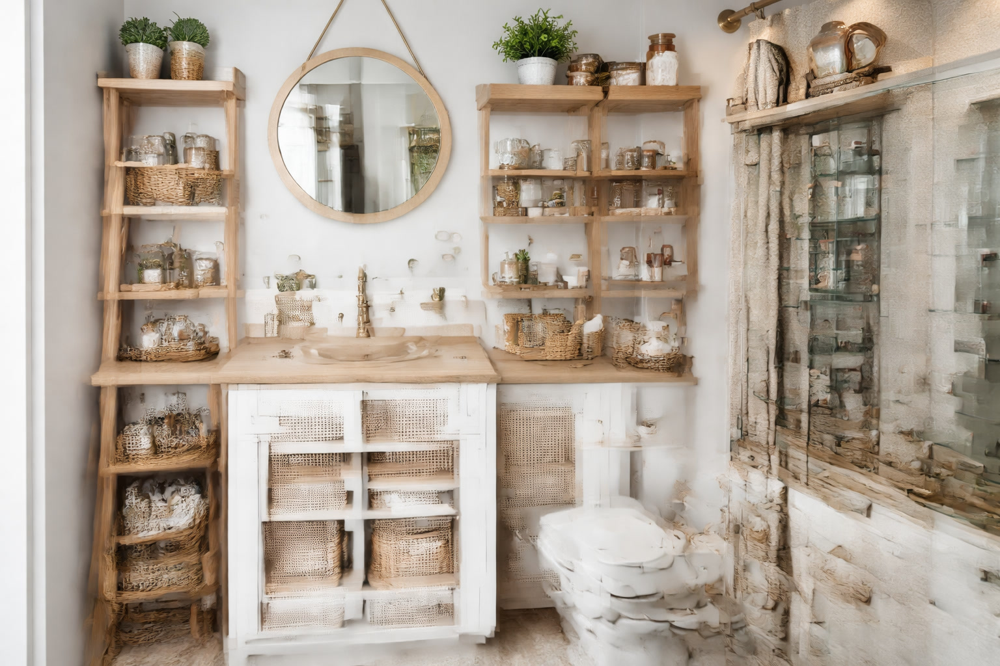

Small Bathroom Storage Ideas: Maximize Every Inch (2026)

Bathroom Products Expert • 10+ years research

Quick Answer
The 3 highest-impact storage solutions for small bathrooms are: over-the-toilet shelving (uses wasted vertical space), over-door organizers (instant storage, no tools), and floating shelves (keep counters clear). Combined, these three solutions can triple your storage capacity without reducing floor space.
Table of Contents
Start Here: Assess Your Small Bathroom's Hidden Potential
Before buying anything, walk into your small bathroom with fresh eyes and identify every surface that is currently empty. Most people overlook these areas entirely because they have always been empty. The typical small bathroom has 5-8 unused storage opportunities hiding in plain sight. The wall space above the toilet is the most commonly wasted area, followed by the back of the bathroom door, empty wall space between fixtures, the unused vertical area above wall-mounted sinks, the sides of vanity cabinets, and the space inside cabinet doors. By systematically addressing each of these opportunities, you can transform a cramped, cluttered small bathroom into an organized, functional space that actually feels larger because counters are clear and everything has a designated home.
Idea 1: Maximize Vertical Space
Over-the-Toilet Shelving
This is the single highest-impact addition for most small bathrooms. An over-the-toilet shelf unit turns 6-8 square feet of empty wall space into 3-4 shelves of functional storage. Budget options start at $30 for basic wire shelving, while premium engineered wood units with industrial farmhouse styling cost $50-$90. Choose open shelving for a more spacious feel, or enclosed cabinets if you prefer hiding clutter. Always secure the unit to the wall with the included anti-tip hardware regardless of how stable it seems freestanding.
Tall Narrow Cabinets
A slim cabinet just 6-8 inches wide can fit between the toilet and wall, between the vanity and wall, or in any narrow gap. These hold surprising amounts of toiletries, cleaning supplies, and extra toilet paper in a footprint that would otherwise be completely wasted. Some models include wheels for easy cleaning access behind the unit.
Ladder Shelves
Leaning ladder-style shelves provide a decorative vertical storage solution without the visual weight of a full cabinet. They create an open, airy feel while offering 3-5 tiers of display and storage space. These work particularly well in bathrooms with high ceilings where you want to draw the eye upward.
Idea 2: Use Your Walls Intelligently
Floating Shelves
Two or three floating shelves installed above the toilet, beside the mirror, or on any empty wall section provide substantial storage while maintaining an open, uncluttered appearance. Use them for decorative items like plants and candles on the top shelf, with practical items like folded towels and toiletry baskets on lower shelves. For a cohesive look, choose shelves that match or complement your vanity finish. Installation requires a drill and 15 minutes per shelf. Most floating shelves support 15-30 pounds when properly anchored into wall studs.
Wall-Mounted Baskets and Bins
Wire baskets, fabric bins, or woven baskets mounted to the wall create storage that doubles as wall decor. Group 2-3 baskets vertically for a visually appealing arrangement. These work especially well for storing rolled towels, hair tools, and daily-use toiletries. Adhesive mounting options are available for renters who cannot drill.
Medicine Cabinets with Mirrors
If your bathroom has a flat mirror mounted to the wall, consider replacing it with a medicine cabinet that incorporates a mirror door. You gain several inches of depth behind the mirror for medications, skincare products, and small toiletries without losing any visual space or floor area. Recessed models fit inside the wall between studs for the most seamless appearance.
Idea 3: Door and Hook Storage
Over-the-Door Organizers
An over-door organizer with mesh baskets or pockets instantly adds 5-6 tiers of storage to your bathroom door for under $15. No tools, no installation, and it travels with you if you move. Use the top baskets for daily items and lower baskets for backstock supplies. These work on both the main bathroom door and on any cabinet doors inside the vanity.
Towel Hooks Instead of Bars
A towel bar takes up 24-36 inches of linear wall space for just 1-2 towels. Individual hooks use a fraction of the space and hold just as many towels when spaced 6-8 inches apart. You can install a row of 4-5 hooks in the space of one towel bar and hold more towels while creating a less visually heavy look. Adhesive hooks are perfect for renters.
Behind-the-Door Towel Rack
A towel rack mounted on the back of the bathroom door keeps towels out of sight and off the walls entirely. When the door is open, the towels are hidden behind it. When closed, they are accessible but take up zero wall space. This is an excellent solution for shared bathrooms where multiple people need towel storage.
Idea 4: Conquer the Under-Sink Chaos
The space under the bathroom sink is often the most disorganized area in the entire home. Here is how to transform it:
Expandable Shelf Organizers
These adjustable shelves work around sink plumbing to create two levels of storage where you previously had one. They typically cost $15-$25 and double your under-sink capacity instantly. Look for models with adjustable heights and removable panels that accommodate different pipe configurations.
Pull-Out Drawers
Sliding drawer organizers that mount inside the cabinet bring items from the back of deep cabinets to the front with one pull. No more reaching blindly into dark corners. These cost $20-$40 and install with screws in 10 minutes.
Stackable Bins
Clear stackable bins with labels create a system where everything has a designated spot. Group items by category: cleaning supplies, hair care, first aid, extra toiletries. The transparency lets you see contents without opening each bin.
Idea 5: Keep Counters Clear
A clear countertop makes any bathroom feel larger. The key principles are: only daily-use items should live on the counter, everything else gets stored in cabinets, shelves, or organizers. A single attractive tray or caddy can corral the items that must stay out, like hand soap, toothbrush holder, and a small cup. Everything else, including hair tools, makeup, skincare products, and extra supplies, should have a dedicated home somewhere other than the counter surface.
Budget DIY Solutions Under $20
- Mason jar wall organizer ($8): Mount 2-3 mason jars on a wood plank for toothbrushes, cotton balls, and Q-tips
- Magnetic strip for bobby pins ($5): A magnetic strip inside a cabinet door holds bobby pins, tweezers, and nail clippers
- Tension rod under sink ($8): A tension rod under the sink creates hanging storage for spray bottles
- Command hooks for hair tools ($6): Adhesive hooks inside a cabinet door hold curling irons and flat irons
- Lazy Susan under sink ($10): A rotating platform makes deep cabinet corners accessible
Frequently Asked Questions
What is the best storage solution for a bathroom with no counter space?
Wall-mounted solutions are your best friend. Install floating shelves for daily items, an over-the-toilet unit for bulk storage, and hooks for towels and robes. A wall-mounted soap dispenser and toothbrush holder free up even more space around the sink area.
How can renters add bathroom storage without damaging walls?
Focus on non-permanent solutions: over-door organizers, freestanding over-the-toilet shelves, adhesive hooks and shelves rated for your wall type, tension rods, and under-sink expandable shelves. All of these install without drilling and remove without damage when you move out.
What should I store in a small bathroom versus elsewhere?
Store only what you use daily or weekly in the bathroom. Bulk supplies, seasonal items, and rarely-used products should be stored in a linen closet, bedroom, or hallway closet. A small bathroom should hold daily toiletries, 2-3 towels per person, hand soap, toilet paper for 1-2 weeks, and essential cleaning supplies only.